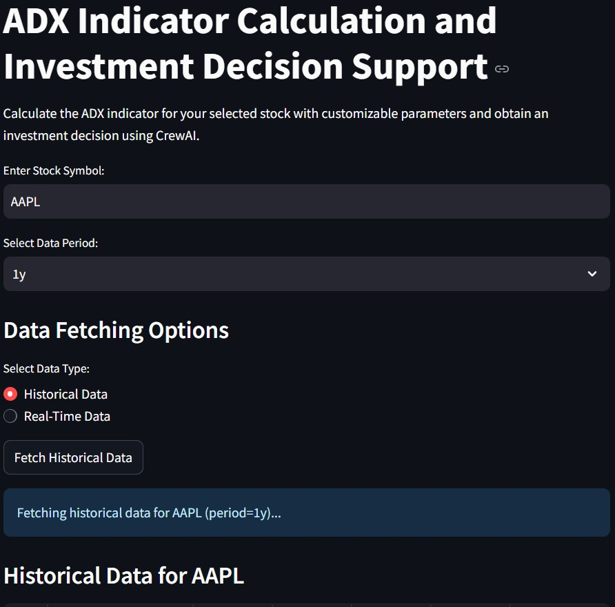
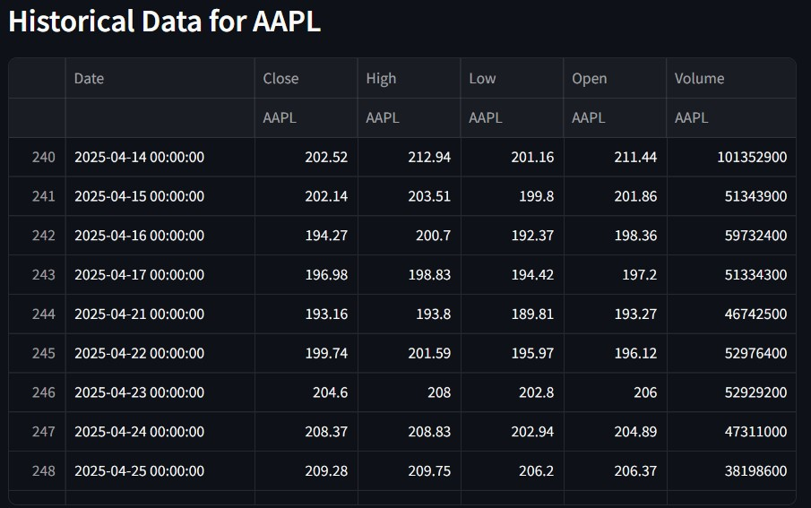
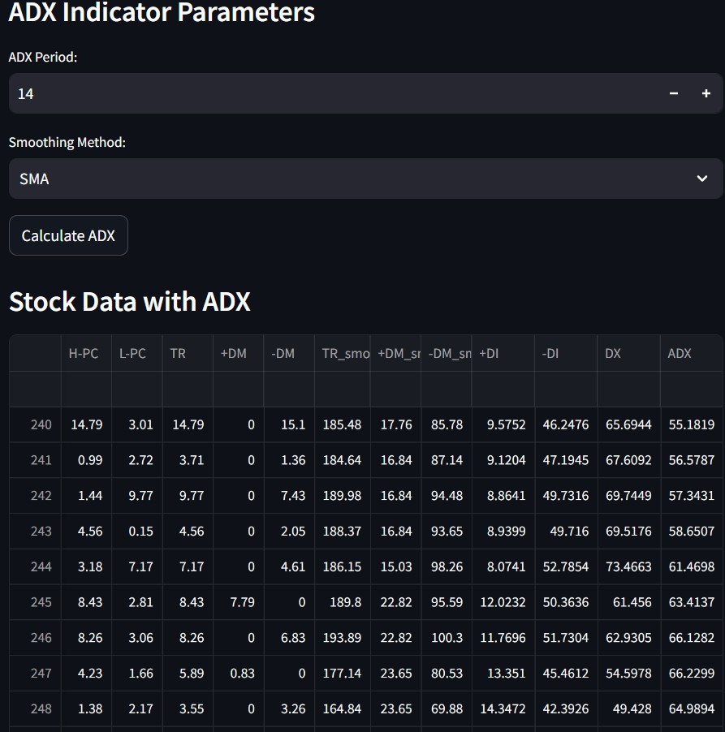
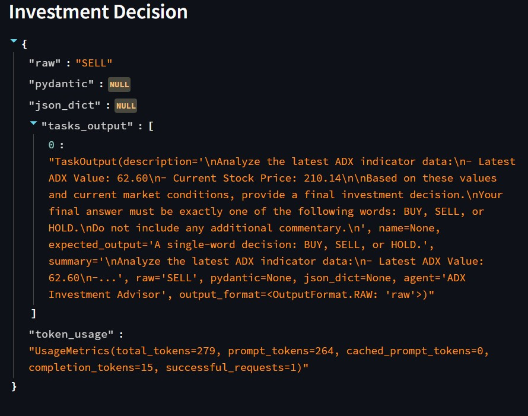
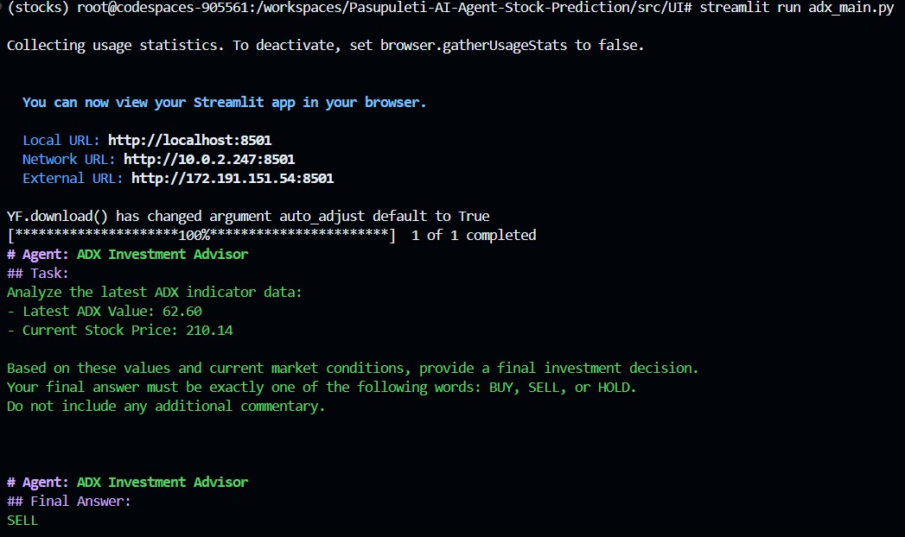
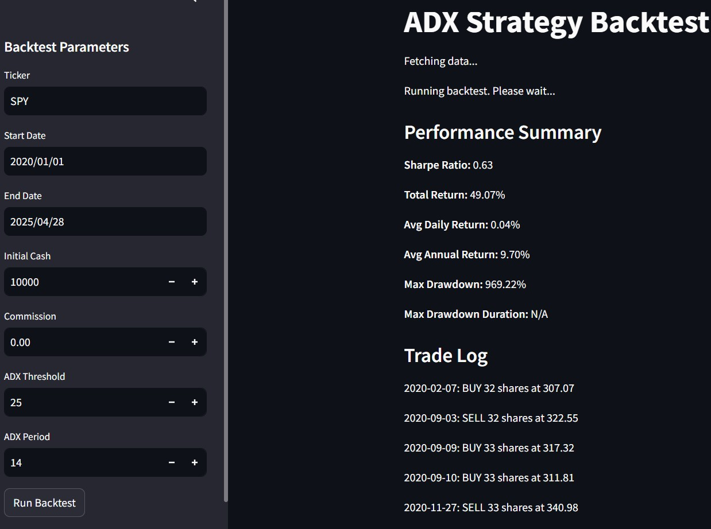
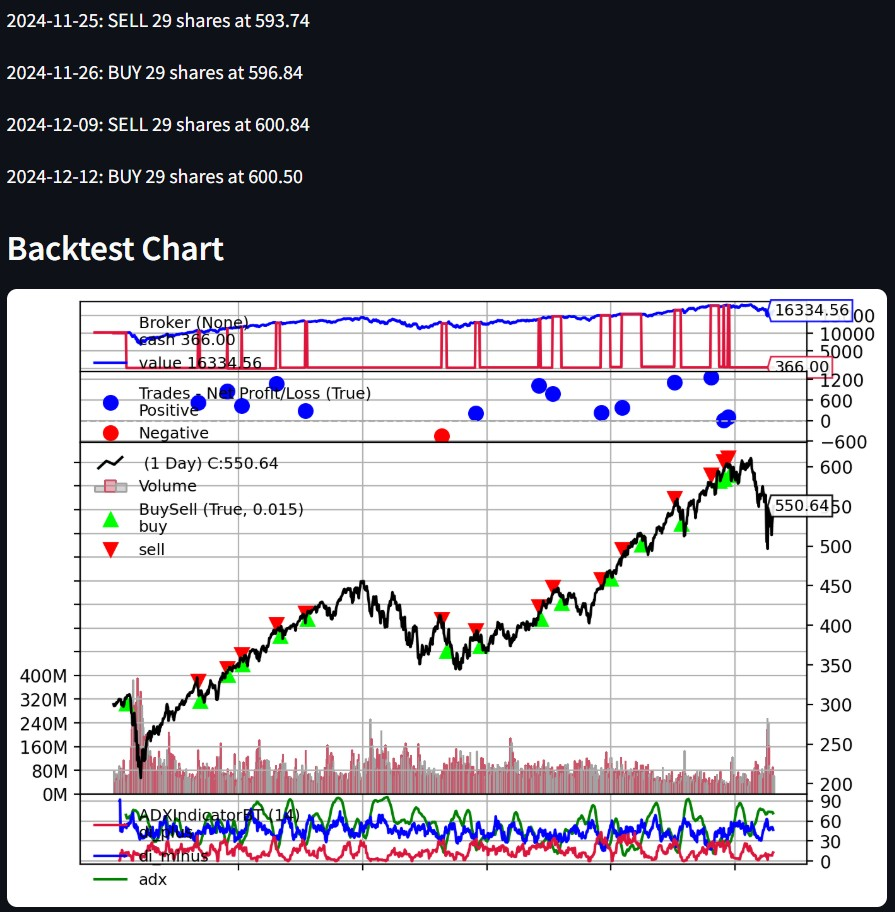

Issue:
ADX: As a trader, I want to utilize the Average Directional Index (ADX) integrated with CrewAI agents to identify and analyze the strength of market trends, so that I can receive informed investment decisions and make strategic trading choices.
This project delivers a Streamlit application that calculates the Average Directional Index (ADX) for user-specified stocks, fetches both historical and real-time price data, and integrates CrewAI agents to generate actionable BUY, SELL, or HOLD signals based on the latest ADX readings. My contributions include architecting and implementing the ADX calculation module, designing the Streamlit user interface, wiring data-fetching pipelines, developing and tuning the CrewAI decision agent, and building a backtesting engine to validate strategy performance.
This project implements a Streamlit-based application that:
| Sprint | Objective |
|---|---|
| 1 | Setup project scaffold & ADX calculation MVP |
| 2 | Integrate historical & intraday data; refine UI |
| 3 | Develop CrewAI agent for ADX-based investment advice |
| 4 | Build and validate backtesting framework for ADX strategy |
Below is a concise summary of each key user story, with the tasks completed and a brief description of what was delivered.







Repository: github.com/lakshmip98/Pasupuleti-AI-Agent-Stock-Prediction
| Date | Commit | Description | User Story | Task |
|---|---|---|---|---|
| 02/01/2025 | 91b0f4268472bfd3c675559dfc5aafcf66fa963d | Adding ADX indicator main and indicator files | ADX | ADX.1 |
| 02/08/2025 | 8c0be5809f378a4ed3014a07e676ff77740092d4 | Adding ADX Customization | ADX | ADX.6 |
| 02/15/2025 | f66df67a23d6b700bf4eb1ee77e59a270d4f3061 | Update adx indicator and main file with real time and historic data | ADX | ADX.6 |
| 03/11/2025 | dc6d58284af7a77050a99b6644a101800d490c04 | ADX Crew AI agent code added | ADX | ADX.8 |
| 04/11/2025 | dc6959bbe0361d24ce2f47cbdb219c4771bfa92b | backtest | ADX | ADX.11 |
| 04/12/2025 | 7ddeacc994ac8617219c7a26c8df0826d5195604 | Backtest ADX Indicator | ADX | ADX.11 |
| 04/12/2025 | 19154963d68621ee84b58c1aa45d80933474db2d | Update ADX backtest code | ADX | ADX.11 |
| 04/23/2025 | db213b69b8e3b36e17c3424237f0aea7e362db0e | Add comments to the code | ADX | ADX.11 |